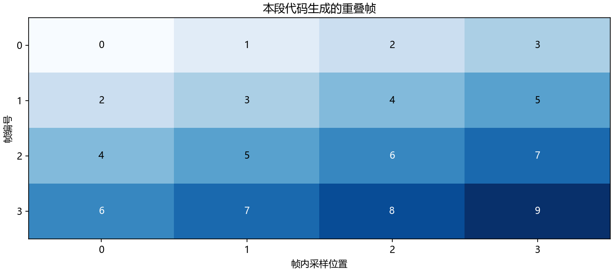

看图理解 · 跟着推演 · 对照真实结果
第04课 · 用四行数据搞懂NumPy的轴
先建立直觉，再逐节讲原理、代码与结果；章节目录可定位学习。从双声道增益这个小任务出发，看懂shape、axis、广播与分帧。
从直觉、原理，到代码与结果
本版保留导览小实验，增加教材逐节精讲、代码分段阅读和结果解释。三个项目另有本次真实模型短推理，第 12 课增加实际训练曲线。按右侧小节分次学习即可，不必一次看完。
完整文字、规范公式和注释代码仍在上方“读完整图文”。视频中的历史报告、教学算例与本次实测分别标明，短演示不冒充完整重训或设备验收。
先修：会运行Python；第03课知道RMS计算步骤。
- 明确时间轴和声道轴的含义
- 能计算每声道RMS并检查输出形状
- 能解释广播、切片与重叠帧
本课覆盖清单与证据范围
- 1. 数组不是声音本身，它是一张带规则的数字表
- 2. 轴和归约：你想保留什么，就不要把它平均掉
- 3. 第一段核心代码：两声道，不要写两套循环
- 4. 从长波形切出短帧：为什么同一个点会出现多次
- 5. 整数、浮点和数值安全
- 6. 读取真实音频：接口、路径与报错
- 7. 跟着定位一次“不报错但结果不对”的问题
- 8. 自测与参考答案
- 9. 实习验收：能定位形状错误，比背函数名重要
结果从哪里来
- 导览中的小算例实际执行
- 原教材逐节讲解；正文代码/公式/图保留
四点算例验证轴和广播，不代表真实双声道总可以直接平均；分帧例子独立于绘图的四点信号，真实工程还需边界与异常输入处理。
新版视频时间轴已改变，单独记录续播位置；学习计划的完成勾选保持不变。
跟着运行：注释代码、实际输出与结果图
下面代码在生成本站时实际执行。这里只是教学小实验，不是完整模型训练或业务设备测评。
import numpy as np
# 行是时间、列是声道；右路幅度是左路两倍
audio = np.array([[0.1, 0.2], [0.2, 0.4],
[-0.1, -0.2], [-0.2, -0.4]], dtype=float)
gains = np.array([1.0, 0.5]) # 每个声道一个增益
adjusted = audio * gains # 从最后一维对齐广播
rms = np.sqrt(np.mean(adjusted ** 2, axis=0))
mono = adjusted.mean(axis=1) # 仅在允许混音时合并声道
index = np.arange(4)
left, right, raw_right = adjusted[:, 0], adjusted[:, 1], audio[:, 1]
# 一个独立的编号示例：窗长4、帧移2，不补零
x = np.arange(10)
frames = np.stack([x[i:i+4] for i in range(0, 7, 2)])
print('输入/输出/单声道:', audio.shape, adjusted.shape, mono.shape)
print('每声道RMS:', rms)
print('切片形状:', audio[:, 0].shape, audio[:, :1].shape)
print('分帧结果:', frames)
本次实际输出
输入/输出/单声道: (4, 2) (4, 2) (4,) 每声道RMS: [0.15811388 0.15811388] 切片形状: (4,) (4, 1) 分帧结果: [[0 1 2 3] [2 3 4 5] [4 5 6 7] [6 7 8 9]]

精讲中的代码、运行步骤与大图
代码片段用于逐行理解；真实运行结果仅限明确标注“本次实际”的部分。教材历史图保留原有实验范围。
代码精读 03 · 第1–16行
源码精读 / 教学片段，需配套环境与上下文，不等同于独立脚本。
import numpy as np
# 行是时间，列是声道；这里只放 4 个时刻，方便手算。
audio = np.array([[0.1, 0.2], [0.2, 0.4],
[-0.1, -0.2], [-0.2, -0.4]], dtype=np.float64)
gains = np.array([1.0, 0.5]) # 左声道不变，右声道幅度减半
adjusted = audio * gains # (4,2) 乘 (2,)，按末维广播
channel_rms = np.sqrt(np.mean(adjusted ** 2, axis=0))
mono = adjusted.mean(axis=1) # 仅在允许混音时合并声道
print("输入/输出形状:", audio.shape, adjusted.shape, mono.shape)
print("每声道 RMS:", channel_rms)
print("混音结果:", mono)
# 单个数与切片的维度不同，接口对接时要主动检查。
print("第一列:", audio[:, 0].shape) # (4,)
print("保留第二维:", audio[:, :1].shape) # (4,1)代码精读 04 · 第1–18行
源码精读 / 教学片段，需配套环境与上下文，不等同于独立脚本。
import numpy as np
x = np.arange(10) # 原始波形：编号 0 到 9
length, hop = 4, 2 # 每帧 4 点，下一帧前进 2 点
starts = range(0, len(x) - length + 1, hop)
frames = np.stack([x[i:i + length] for i in starts])
print("帧矩阵形状:", frames.shape)
print(frames) # 每行是一帧，每列是帧内位置
print("逐帧均值:", frames.mean(axis=1))
# 在课程根目录运行；把这一段实际计算的 frames 直接画出来。
from pathlib import Path
import matplotlib
matplotlib.use("Agg")
import matplotlib.pyplot as plt
plt.rcParams.update({"font.family": "Microsoft YaHei", "axes.unicode_minus": False})
assert Path("tutorial/chapters").is_dir(), "请在 audio-course-zh 根目录运行"
fig, ax = plt.subplots(figsize=(9, 4), layout="constrained")代码精读 04 · 第19–27行
源码精读 / 教学片段，需配套环境与上下文，不等同于独立脚本。
ax.imshow(frames, cmap="Blues", aspect="auto", vmin=0, vmax=9)
for row in range(frames.shape[0]):
for col in range(frames.shape[1]):
ax.text(col, row, str(frames[row, col]), ha="center", va="center",
color="white" if frames[row, col] > 5 else "black")
ax.set(xticks=range(length), yticks=range(len(frames)),
xlabel="帧内采样位置", ylabel="帧编号", title="本段代码生成的重叠帧")
fig.savefig("tutorial/figures/ch04_frames.png", dpi=150)
plt.close(fig)结果读图 04 · 4. 从长波形切出短帧：为什么同一个点会
原教材运行记录

原教材已存图 不是本次新测 先确认实验范围 再解释坐标与单位
代码精读 05 · 第1–10行
源码精读 / 教学片段，需配套环境与上下文，不等同于独立脚本。
import numpy as np
pcm = np.array([-32768, 0, 16384, 32767], dtype=np.int16)
x = pcm.astype(np.float64) / 32768.0 # 先转换，随后才计算
if x.size == 0 or not np.isfinite(x).all():
raise ValueError("音频必须是非空、有限数值")
peak = np.max(np.abs(x)) # 不直接对 int16 最小值取绝对值
rms = np.sqrt(np.mean(x ** 2))
print("归一化采样:", x)
print("峰值/RMS:", peak, rms)闭卷自测：(48000,2)的时间在前音频，采样率48 kHz。时长、总元素数、每声道RMS输出形状是什么？
时长1秒，总元素数96000；沿axis=0对时间归约，RMS输出形状(2,)。
逐字讲稿 · 可定位回看
下面是一张纯算术小表，不是可播放幅度：三行代表三个时刻，两列代表左、右声道。内容是 [1,10]、[3,30]、[5,50]。不要先背 axis，先问自己想留下“声道”还是“时间”。
想得到每个声道的平均值，就分别把每列的三个时刻平均：左边是 3，右边是 30。结果只剩两个数。 这对应沿时间轴求平均，也就是本例的 axis=0；时间这一维被合并，声道这一维保留。
想把左右声道在每个时刻平均，就按行算：5.5、16.5、27.5。本例对应 axis=1，结果保留三个时刻。 NumPy 不知道哪一维是时间。有的库采用 (声道,时间)，这时上面的轴号就要反过来；规则不变，数据约定变了。
今天只用四个时刻、两个声道。左声道是零点一、零点二、负零点一、负零点二，右声道恰好是两倍。任务是把右路减半，并分别计算两路均方根。
这组输入很小，方便手算，而且两路故意不同。如果两路输入完全一样，一些轴写错的程序也可能看起来正常，测试就发现不了问题。
NumPy并不知道哪列叫左声道。时间在行、声道在列，是我们给接口规定的含义。以后接别人的库，第一件事就是核对它是否遵守相同约定。
这里形状是四乘二，意思是第一维四个时刻，第二维两个声道。维数是二，元素总数是八。每个元素采用浮点类型存储。
长度函数只返回第一维长度，所以是四，不是八。总元素数才是八。计算时长应使用时间维的长度除以采样率，不能随手用总元素数。
如果另一个库返回二乘四，可能是声道在前、时间在后，并不一定数据坏了。应该按文档显式转换一次，再让后面的处理都用统一布局。
先想输出应该有几个数。每个声道一个均方根，应该输出两个数，所以要把时间方向合并，保留声道方向。在本课布局里就是沿零号轴平均。
如果沿一号轴平均，左右声道被合并，每个时刻留下一个数，结果长度为四。这是一种混音操作，不是每声道音量统计。
如果平均时根本不写轴，所有八个数会一起合并，只返回一个值。程序可能完全不报错，但已经不是我们要的任务。先预测输出形状，能抓住这类错误。
增益数组是一和零点五，形状只有二。与四乘二的音频相乘时，从最后一维对齐，两个增益分别作用到左右两列，并重复用于每个时刻。
因此左路不变，右路减半。我们没有复制四份增益，也没写两个循环。广播让代码简洁，但前提是你已经想清楚维度对应关系。
如果要每个时刻一个增益，通常需要四乘一的形状，而不是单独长度四。末尾这个一表示该时刻的增益广播到所有声道。缺少它会报错，或者在巧合尺寸下算错。
前四行定义四乘二输入，第五行定义每声道增益，第六行相乘。右路原来是左路两倍，乘零点五以后应与左路完全一致。
第七行先平方，再沿时间轴平均，最后开根号，输出两个数。第八行沿声道平均得到四点单声道，这只在允许混音的情况下才做。
后面另外用零到九的编号演示重叠分帧。它不是本图四点音频的延长，也不是模型输出。把两组小例子的输入分开，能避免误认图和代码之间的关系。
图中处理前右路幅度较大；处理后左右两条线重合。这不是少画了一条，而是根据我们的构造，两路数据确实相同。
平方后四个数是零点零一、零点零四、零点零一、零点零四，平均零点零二五，开根号约零点一五八一。两个声道输出都应是这个值。
单声道混音也等于左路四个数，因为处理后两路相同。真实录音如果左右不同相或有时延，平均可能抵消目标；这组算例不能证明声道平均永远合理。
取第一列时，冒号逗号零会得到一维长度四；用冒号逗号冒号一，则保留第二维，形状是四乘一。它们都含四个数，但维度不同。
如果后面要乘一个声道增益向量，四乘一可能扩展出一个矩阵，而一维数组会按另一套末维匹配规则处理。不要只看打印出来的数差不多，就忽视形状。
切片还可能是原数组的视图。修改截取片段可能同时改变原数据。做干净参考与带噪版本时，必要时明确复制，避免以为只改了输入，实际把答案也污染了。
现在看第二个小例子，原数据是零到九。第一帧取零、一、二、三；帧移为二，第二帧从二开始，取二、三、四、五。
数字二和三在两帧都出现，这是重叠，不是生成了新的声音信息。接下来从四和六开始，所以总共四帧，矩阵形状四乘四。
注意同样是二维数组，列现在代表帧内位置，不是声道。如果看到二维就沿一号轴混音，就会把每一帧的采样平均掉。物理含义必须跟着布局走。
一万六采样率下，二十五毫秒窗口有四百点，十毫秒帧移有一百六十点。只保留完整帧且不补零，一秒波形会得到九十八帧。
公式里的N是总点数，L是窗长，H是帧移。先减去第一帧长度，再看还能前进多少次，最后把第一帧加回来，所以开头有一个一。
输入短于一帧时要明确补零还是跳过；中心补零的库也可能返回不同帧数。此外，同一录音的重叠帧不能随机分到训练和测试两边，否则会造成数据泄漏。
暂停回答：形状四万八千乘二的录音，采样率四万八千，时长与总元素数各是多少？答案是一秒和九万六千，不要把双声道误算成两秒。
真实整数PCM计算前先转浮点，再平方和取绝对值，避免定长整数溢出。还要拒绝空数组、非正采样率和非有限数，而不是把所有异常默默改成零。
课后写一个音频体检函数，用单声道、双声道、空输入和非数输入测试。遇到广播报错先打印各数组形状，遇到结果不对先问输出应保留哪个维度。
以四个时刻、两个声道为例，shape是四乘二。如果每声道一个增益，增益数组长度应为二，沿最后一维广播；如果每个时刻一个增益，则需要四乘一的形状。
不要一开始用二乘二矩阵测试，因为时间数和声道数刚好相同，错误的广播也可能不报错。选四乘二或三乘五这种不同尺寸，能让轴错误更容易暴露。
最后手算第一行和最后一行。输出shape正确只证明数组能装下结果，不证明你把正确的增益乘给了正确的声道。神经网络的批次、时间和频率轴也用同样方法检查。
NumPy切片常常只是原数组的视图。若把一块缓存切出来后直接改写，可能同时破坏历史缓存。需要独立数据时显式copy，并用小数组验证原始值是否变化。
转置通常改变索引步长，不一定重新排列底层内存。某些模型接口要求连续数组，所以进入接口前需要按约定转换。连续性解决内存布局，不能修复时间和频率含义弄反的问题。
流式历史向右移动时，源区间和目标区间重叠，使用独立副本能避免覆盖尚未读取的数据。排错时先画下标，再决定能否原地修改。
单声道波形可以用 [0.1, 0.2, -0.1, ...] 表示。数组保存这些值，但它本身通常不保存采样率。相同 16000 个数字，按 16 kHz 解释是 1 秒，按 8 kHz 解释是 2 秒。因此，一个音频输入通常至少需要“采样数组＋采样率”两个部分。
把二维数组想成表格很有帮助：行可以表示时间，列可以表示声道。例如 audio.shape == (16000, 2)，在本课约定下就是 16000 个时刻、两个声道。注意这只是约定，不是 NumPy 自动识别出的物理意义。
若某个库返回 (2,16000)，你必须按它的规则解释，不能因为第一维小就擅自改动。 shape 告诉你每个维度有多长；ndim 告诉你有多少个维度；dtype 告诉你每个数字怎么存。len(audio) 只返回第一维长度，不是数组总元素数。audio.size 才是总元素数。对 (16000,2)，前者为 16000，后者为 32000。
axis=0 指第一维，axis=1 指第二维。设数据形状 [时间,声道]：沿 axis=0 求均值，会把所有时刻合并，得到每个声道的一个均值，形状 [声道]；沿 axis=1 求均值，会把声道合并，得到每个时刻的一个值，形状 [时间]。
先手算一张小表：[[1,3],[5,7]]。沿时间轴平均是 [3,5]，沿声道轴平均是 [2,6]。两者都能运行，都没有语法错误，但回答的是完全不同的问题。音频代码最危险的错误经常不是程序报错，而是维度错了还照样给出数字。
广播（broadcasting）是让兼容形状做逐元素运算的规则。[时间,声道] 乘 [声道] 可以给各声道分别加增益，因为从最后一维对齐时对应。若要给每个时间点一个增益，可用 [时间,1]。缺少这个 1，可能无法匹配，也可能在某些巧合长度下算错而不报错。 NumPy 的正式规则是从末维向前比较，维度长度相同或其中之一为 1 才兼容。官方广播说明可用于核对边界情况。
代码中先平方、再沿时间平均、再开根号，所以得到“每声道 RMS”，不是整个数组的一个 RMS。预期两个声道处理后相同，各自 RMS 约 0.158114，混音为 [0.1,0.2,-0.1,-0.2]。一维 (4,) 和二维 (4,1) 都只有四个数，却可能与后续数组产生完全不同的广播结果。
把 shape 打印出来不丢人，省下一次错误训练才重要。
这段是数值与形状练习，没有生成图文件；下一段会把相同的“行列规则”用已运行的分帧图展示，避免把不对应的图片冒充这四个采样的运行结果。
先看中文注释：行是时间，列是声道；这里只放 4 个时刻，方便手算。；左声道不变，右声道幅度减半。这几行仍属于3. 第一段核心代码：两声道，不要写两套循环的同一处理链，输入变量沿用前一段，不是一个独立程序。
先看中文注释：(4,2) 乘 (2,)，按末维广播；仅在允许混音时合并声道。mean沿指定轴求平均。保留时间轴还是声源轴，会改变统计对象，所以必须核对axis或dim。 平方根常用于把均方量还原成幅度尺度。检查开方前是否非负，以及稳定项是在分母还是根号内部。
先看中文注释：单个数与切片的维度不同，接口对接时要主动检查。；(4,)；(4,1)。打印是观测点。把这里的真实值与理论预期比较，若不一致应保留输出排错，而不是手工改成期望数字。
语音随时间变化，我们常每隔一小段时间看一个短窗口。窗口长度 L 表示每帧有多少采样，帧移 H 表示下一帧从哪里开始。若 H<L，相邻帧重叠。重叠不是复制出新的信息，而是让不同窗口观察同一部分数据。
例如 16 kHz 下，25 ms 对应 0.025 s乘16000 Hz=400 点，10 ms 帧移对应 160 点。不补零、只保留完整帧，且满足 N大于等于 L>0、H>0 时，信号的帧数为：
1 秒 16000 点对应 1+向下取整（15600）除以（160）=98 帧。使用中心补零的库可能返回不同帧数，所以看到“别人是 101 帧”应先查规则。
这张图来自紧挨着它的代码，不是预先手绘的矩阵。请用鼠标或手指从第二行第一格顺着读一遍，你读到的就是第二帧的四个采样。若改帧移，行间重复关系也会相应改变。绘图部分额外需要 Matplotlib，使用静态后端，不弹出窗口。
图中第一行是 [0,1,2,3]，第二行从 2 开始；数字 2、3 在两行出现，直观展示了重叠。列不是声道，而是帧内位置。预期矩阵形状 (4,4)，逐帧均值 [1.5,3.5,5.5,7.5]。
beginner_labs.py 的 frames_and_stream() 使用同一组输入，运行记录见 beginner_results.json；这里不再重复放第二张相同内容的图。
这个最小示例假设 hop>0，且输入至少有一帧长。真实数据如果短于 length，starts 会为空，np.stack 就会报错。
工程实现应明确选择“补零形成一帧”或“跳过并记录”，而不是让异常数据悄悄进入训练；不同选择也会影响有效长度和损失掩码。
这里用 stack 是为了易读，长音频大量复制会增加内存。后续可以学习滑窗视图与批处理，但先不要为了优化写出自己无法验证的索引。更不能把每一帧都当成独立录音随机划分训练集和测试集，同一原始录音的相邻帧高度相关，会造成泄漏。
先看中文注释：原始波形：编号 0 到 9；每帧 4 点，下一帧前进 2 点。arange按固定步长生成索引。若随后除以采样率，才把采样点编号换成秒。
先看中文注释：每行是一帧，每列是帧内位置；在课程根目录运行；把这一段实际计算的 frames 直接画出来。。mean沿指定轴求平均。保留时间轴还是声源轴，会改变统计对象，所以必须核对axis或dim。 打印是观测点。把这里的真实值与理论预期比较，若不一致应保留输出排错，而不是手工改成期望数字。
断言把预期写成可失败的检查。通过只说明这一条件成立，不自动代表声音质量或全部场景合格。 绘图展示的是传入数组。核对横轴单位、图例与统一尺度后，才可以比较不同处理的变化。
这几行依次得到color。它们对应“4. 从长波形切出短帧：为什么同一个点会出现多次”中的中间量。逐行代入本节小例子的数值，确认每次赋值改变的量；代码片段承接前一段变量，不应脱离上下文单独运行。
绘图展示的是传入数组。核对横轴单位、图例与统一尺度后，才可以比较不同处理的变化。
绘图展示的是传入数组。核对横轴单位、图例与统一尺度后，才可以比较不同处理的变化。
先看这张随教材保存的图。本段分帧代码实际运行后保存的矩阵图。本次视频引用既有结果，不把它称为新运行。
横轴、纵轴、图例和单位决定图在回答什么问题。若曲线重合，先问它验证的是数值等价、形状还是算法质量。图像相似不自动证明真实业务效果相同。
把图中观察与本节假设联系起来，再回到前面的代码确认数组来源。合成信号实验、历史报告和真实模型输出属于不同证据范围，不能混成同一个成绩。
音频文件可能返回 int16，而训练模型通常期望浮点。先转浮点再平方，避免整数溢出；先转浮点再取绝对值，也能避开最小负整数的边界问题。float32 常用于模型训练，float64 适合某些教学验证和高精度数值计算，但不是所有任务都需要后者。
预期归一化值为 [-1,0,0.5,0.999969...]，峰值为 1。isfinite 同时检查 NaN 和正负无穷。
不要把报错的 NaN 全部替换成 0 就宣布修复：先找它为什么出现，例如 log(0)、除以零、空切片或训练溢出。本块是边界数值检查，无独立绘图结果。
先看中文注释：先转换，随后才计算。这几行仍属于5. 整数、浮点和数值安全的同一处理链，输入变量沿用前一段，不是一个独立程序。
先看中文注释：不直接对 int16 最小值取绝对值。绝对值对实数表示幅度大小，对复数表示模长。它丢掉符号或相位，不能代替完整复数频谱。 mean沿指定轴求平均。保留时间轴还是声源轴，会改变统计对象，所以必须核对axis或dim。
先看中文注释：先转换，随后才计算；不直接对 int16 最小值取绝对值。绝对值对实数表示幅度大小，对复数表示模长。它丢掉符号或相位，不能代替完整复数频谱。 mean沿指定轴求平均。保留时间轴还是声源轴，会改变统计对象，所以必须核对axis或dim。
第 2 课的 wave 内存例子已经演示过完整读写。实际工程可以选支持目标格式的音频库，但每次读入后统一执行体检：形状、数据类型、采样率、时长、范围、有限性。文件路径应明确；工作目录不一定等于脚本所在目录。
Windows 路径里反斜杠可能被当作转义，使用 pathlib.Path 或原始字符串可以减少错误。
FileNotFoundError 首先检查路径是否存在、当前工作目录在哪里；ModuleNotFoundError 首先检查安装库的 Python 是否就是当前解释器；
ValueError: operands could not be broadcast together 先逐个打印参与运算的形状；IndexError 先核对维数以及下标范围。不要看到每个错误都先重装环境。
切片还存在“视图”问题：part=x[:100] 可能共享原数据，修改 part 会改到 x。
想明确独立副本可用 .copy()。这在制作干净语音与带噪版本时很重要，否则可能原本打算只改噪声样本，结果把干净参考也污染了。
现在假设你要给左右两路分别计算音量，却写成 np.sqrt(np.mean(audio2))。程序成功返回一个数，为什么不对？不要先去改 sqrt，先问最终应该保留几个数。双声道各一个，应该保留声道维；当前 mean 没写轴，把时间和声道一起平均掉了。
补上正确的 axis=0，再检查输出是不是 (2,)。
下一步故意把 audio 转置，但保持原来的计算代码不变。程序仍可能跑通，这次输出变成了每个时刻的统计。正确做法不是看哪个结果“更像”，而是在接口处记录布局，必要时显式转换一次，然后让后续函数统一遵守约定。可以给函数命名 rms_per_channel_time_first，或者写清输入注释；
清晰名称比在十处代码里猜维度有效。
最后检查测试是否太容易：若左右声道一模一样，许多错误不容易暴露。测试应故意让两路幅度不同，再用很短的数组手算答案。
实际工程中的单元测试往往就这么小，但能很快抓住一大类形状错误。学会构造能“区分对错”的输入，比只拿随机长录音跑一遍更有价值。
1. (48000,2) 的音频，48 kHz，时长、总元素数分别是多少？答：1 秒、96000。 2. 对 [时间,声道] 求每声道 RMS，应沿哪个轴平均？答：沿时间轴，也就是本课的 axis=0。 3. (100,2) 乘 (100,) 能否直接给每个时间点加增益？
答：一般不能，应把增益改成 (100,1)，如 gain[:,None]。 4. 10 个采样、窗长 4、帧移 3，不补零时有几帧？答：
3 帧，从 0、3、6 开始。 5. 为什么需要先 astype(float) 再平方？答：防止定长整数溢出，保证能得到所需的数值范围与精度。
请写一个 describe_audio(samples, fs)，拒绝空数组、非正采样率和非有限数值；输出时长、声道数、数据类型、峰值和 RMS。
再给它测试单声道、双声道、空输入与 NaN 输入。你不需要第一天就搭完整训练框架，但需要证明“输入坏了时我能及时发现”。
下一课把 [帧,采样] 转成 [帧,频率]，频谱就不再只是彩色图片。
适用边界与参考正文
四点算例验证轴和广播，不代表真实双声道总可以直接平均；分帧例子独立于绘图的四点信号，真实工程还需边界与异常输入处理。
教学图与实验图由本站整理生成；项目代码、预训练模型和公开数据的来源见配套正文。旁白是本地中文语音合成，不是教师真人录音，也不是 NotebookLM 生成。没有向 Google 上传项目材料。